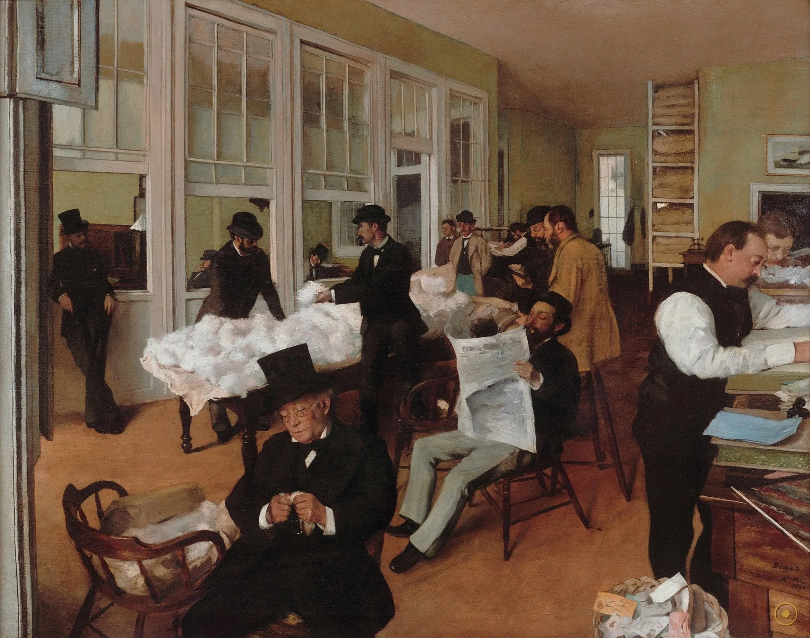
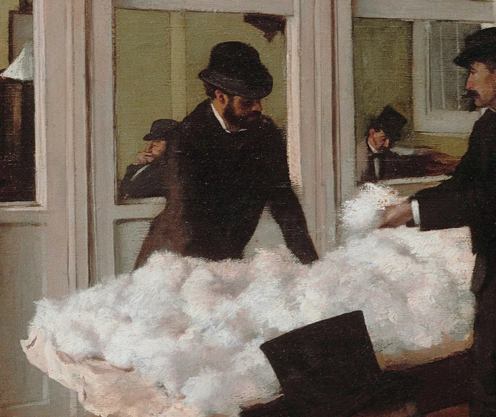
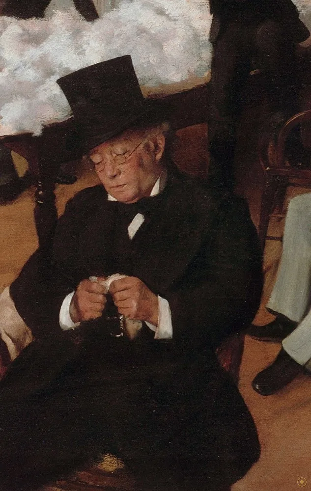
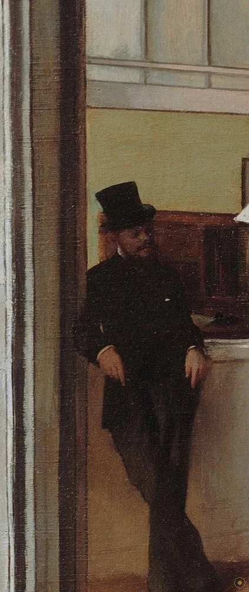
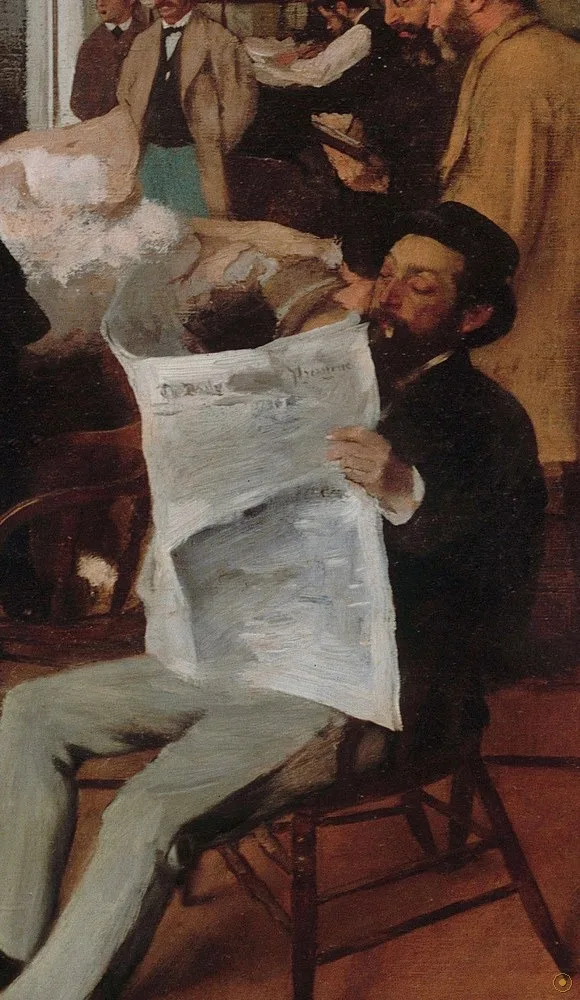
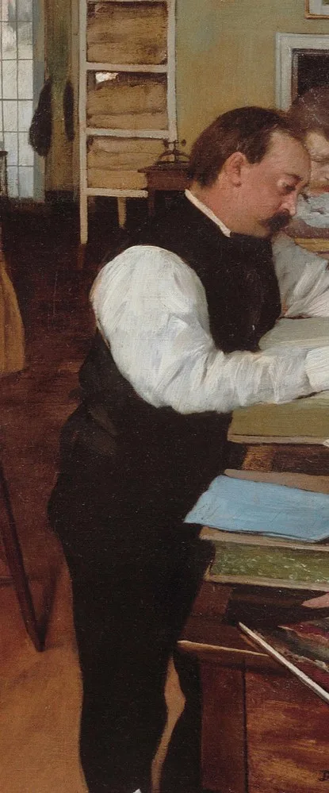
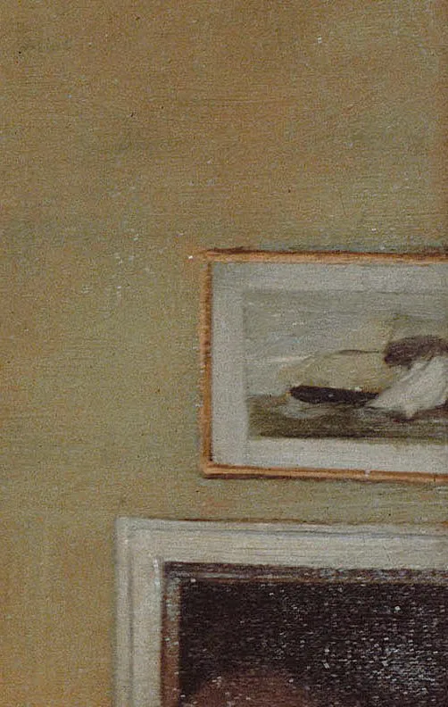
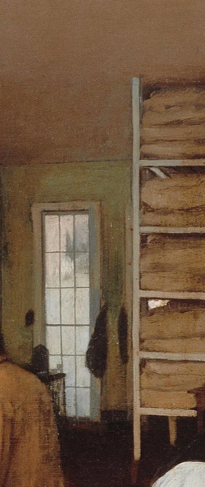
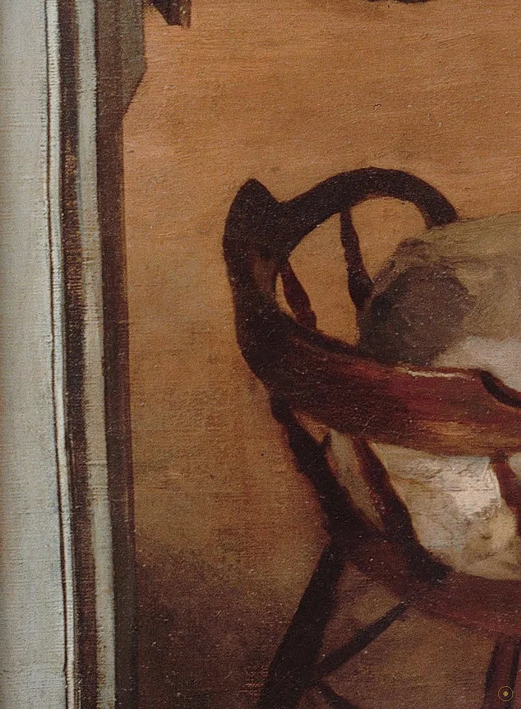

「在新奥尔良，人们开口闭口，只谈棉花。」——德加 1872 年致画家蒂索的信（据英译转译）
1872 年秋，德加第一次、也是唯一一次去了美国——去的是他母亲的出生地新奥尔良。他在舅父米歇尔·米松的宅子里住了几个月，白天就泡在舅父与两个弟弟的棉花行里，看信、读报、旁听买卖。1873 年年初，他在那间办公室里画下了这一幅：十几个人、一张摊满原棉的长桌、一排把房间照得发白的高窗。它既是一张家族合影，也是一帧十九世纪资本主义的切片。
它之所以特别，是因为它「不像印象派」。同一年，莫奈在户外画雾、雷诺阿在画舞会的光斑；德加却把镜头对准室内——账本、验货的手指、读报的姿势。全画几乎没有一笔真正的风景，光是从窗子里进来的，冷而平。这也是德加一生唯一一幅在美国完成、以美国为题、并画了美国人的油画：他至今仍是唯一到过美国、且画过美国题材的重要法国印象派画家。
所以这一页不打算把它讲成「一幅名画」，而是当作一间可以走进去的办公室：从最左边靠窗的弟弟阿希尔，到右前方白衬衫的职员俯身翻账；从桌上那片白色的原棉，到墙上那幅小小的轮船画。它们说的是同一件事——棉花如何变成钱。而最动人的，是德加把家里的长辈放在画面正中，却让他的身体被画框轻轻切掉。
—— 埃德加·德加 1872 年致詹姆斯·蒂索的信（据英译转译）
在本页左下角，可以点亮一支与这座城市同时代的钢琴曲。
从左到右、由近及远：有人在验货，有人在读报，有人在记账，也有人只是靠在窗边看。

点击画面中的 ✦ 光点 查看画面细节 · 图片来源：Wikimedia Commons（公有领域）
一次为了喘口气、也为了看亲人的旅行，意外成了印象派里唯一一张美国现场。
1872 秋 · 巴黎 → 新奥尔良
1872 年秋，德加听从弟弟勒内的劝说，登上前往美国的船。他在新奥尔良待了将近半年，住进舅父米歇尔·米松在埃斯普拉纳德大道的宅子里。此行的初衷并不「艺术」：他在巴黎的创作正卡壳，卖画也不顺，想换个地方喘口气。他在给朋友的信里抱怨给家人画肖像「条件糟透了」，却在同一封信里承认，离开巴黎这段日子「毕竟帮了我大忙」。
➤1873 初 · 棉花行
1873 年年初，德加在舅父与弟弟合伙的棉花行里找到了新的题目。他写信告诉朋友，自己「抓住了一幅相当有力气的画——《新奥尔良棉花买主们的办公室》」。这幅画是在美国完成的，随后被他安排运回大西洋对岸。这个细节长期被人搞错：早前普遍以为它画于回到法国之后，直到后来的研究才确认，它在美国就已经画完。
➤1876 → 1878 · 巴黎 → 波城
1876 年，德加把它送进第二届印象派画展，与莫奈、雷诺阿、莫里索、毕沙罗同场。它被评论单独拎出来讨论，且评价偏正面：有评论说它「面孔塑形精准、画得用心」；同一批评论里也有人夸它「与革命性的画法无关」。但展览之后它并没卖出去——德加本想把它卖给英国曼彻斯特的棉纺厂主，没成功。1878 年，法国西南小城波城的美术馆买下了它，此后它再没离开过法国南部。

真事一 · 它是印象派里唯一的「美国现场」。画这幅画的 1873 年，莫奈在阿让特伊的河上画画舫，雷诺阿在巴黎画剧院与人像；德加却在密西西比河口的一间办公室里数棉花。他一生只去过一次美国，也只画过这一批美国题材。今天回看，它几乎是孤本：印象派的观察方法，落在了一个完全不属于印象派的场景上——一间账房。
真事二 · 它既是一张家族合影，也是一份商业记录。画中至少有四、五位是德加的亲属或姻亲：舅父米歇尔·米松、弟弟阿希尔与勒内，以及米松生意圈里的人。德加把家人和同事放进同一间屋子，却不给他们标准的肖像姿态——有人在验货，有人在读报，有人只是一个背影。在他笔下，家族史与生意史是同一样东西。
真事三 · 它是德加最早进入公共收藏的作品之一。画展上评价不差，它却卖不出去；德加本想把它卖给英国曼彻斯特的棉纺厂主（那里正是用棉的下游），终未成事。1878 年，法国波城的小美术馆把它买下，从此它一直留在法国西南部。一幅画棉花生意的画，最终在一座以温泉与比利牛斯山闻名的小城落了户。
※ 画中人物的具体身份（尤其右前方记账者与后排职员）学界尚有不同说法；引文据英译转译，措辞或因译本而异；尺幅、藏地依波城美术馆与公开资料整理。
把画面拆开看：人、棉、纸、船——每一样都在说棉花怎样变成钱。

舅父坐在最前景，捏一撮棉花判断纤维——家族与生意在他手上是同一件事。

双手插袋倚着门框，不验货也不记账——画面边缘的一个人，像一扇通到街上的门。
一大片未打包的散棉摊满桌面，所有人的动作都朝它去。也叫一片「棉花的海洋」。

满屋都在忙，只有他在读报。通常被认作德加的弟弟勒内。

俯身翻账册的男子，白衬衫是满屋深色里最亮的一块。看不见脸，只看得见手。

一幅镶框的明轮船小画。棉花走水路出海——它给这间房标出了在地图上的位置。

一排排纸包着的棉花样品，几乎像图书馆的书。凭样成交，样包本身才是资产。

左下角一张空椅，像刚有人让座——德加请观众坐进这幅画的暗门。
印象派的口号是画当代生活，多数人把它理解成户外：林荫道、火车站、河上的船。德加偏不。他几十年如一日地画室内——舞排练厅、洗衣房、赛马场看台、咖啡馆，以及这里：办公室。他关心的是现代生活里那种被职业规定好的身体：弯腰、低头、倚靠、抄写。这幅画是这套兴趣最早、也最完整的一次呈现。
德加到访的年份，正是美国内战之后的「重建时期」（Reconstruction）。新奥尔良是棉花出口的重镇：战前由奴隶种植与劳作撑起的棉花经济，战后在自由劳工与北方资本的夹缝里重组。德加未必想画政治，但他画的这间办公室本身就是那场重组的一个切片——家族资本、棉花样品、往来客商，全挤在一块儿。
1876 年第二届印象派画展上，评论界对它并不冷淡。有评论说它「面孔塑形精准、描绘用心」，是德加「最讲道理」的作品之一；也有评论夸它「与革命性的画法无关」——在同一场展览里，这句话既是赞美，也是划界。反面的声音来自作家左拉：他嫌它「介于一幅海景和一张插画之间」，笔法「模糊而可怜」。一幅画在同一年里既被当成优点、又被当成缺点，说明它踩在了当时趣味的裂缝上。
这幅画后来影响了一整类题材：办公室、柜台、账房、交易的现场。二十世纪的绘画与摄影里，那些把「工作」拍成「场景」的尝试，都能在这间新奥尔良的办公室里找到一处遥远的先例。德加证明了：不必有神话，不必有英雄——一群人各干各的，也够画一张大画。
德加启程赴美（唯一一次）；抵新奥尔良，住进舅父米歇尔·米松的宅子。
在舅父的棉花行里画成本画（73 × 92 cm，油彩画布），随后运回法国。
入选第二届印象派画展，评论两极，未能售出。
由法国波城美术馆购入，成为最早进入公共收藏的德加作品之一。
波城美术馆镇馆之宝；也是「印象派画过美国」几乎唯一的实物证据。